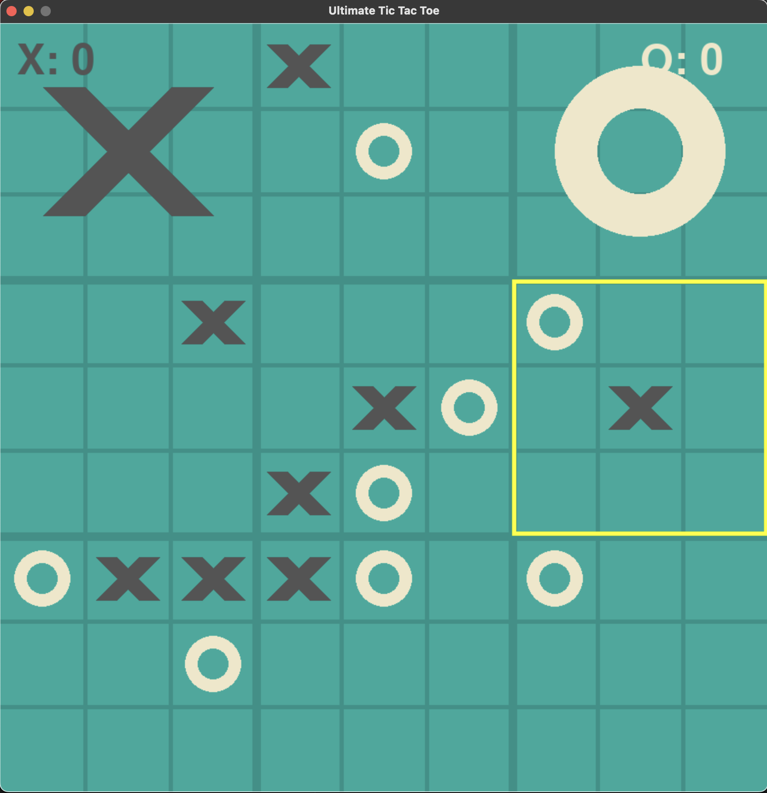

Ultimate Tic Tac Toe is a game where two players dynamically play 9 games of Tic Tac Toe at the same time. These smaller games come together to form one big game of Tic Tac Toe. If one player wins a smaller game of Tic Tac Toe, their symbol takes over that grid in the larger game. Whoever wins the large game of Tic Tac Toe wins the match.
The smaller games of Tic Tac Toe are evaluated like normal games. If one player moves in the top corner of a smaller game, the other player must play in the corresponding top corner of the next game, if possible. The game includes a server that sends data to players logged in on the website. The history of games played is stored and used to calculate player scores, similar to the Elo rating system.
Example of an Ultimate Tic Tac Toe game
show the best quotes from people